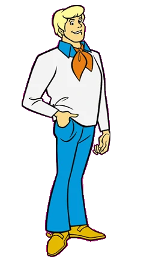
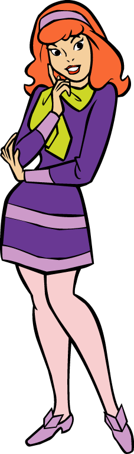
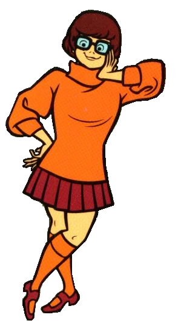

Membros da Mistério S/A
Fred

Daphne

Velma

Salsicha

Scooby-Doo

Sinopse
Quatro adolescentes metidos a detetives — Fred, Velma, Daphne e Salsicha — com Scooby-Doo, um Dogue Alemão falante, viajam numa van chamada Máquina de Mistério, e ajudam a investigar casos misteriosos. Visitam lugares inóspitos, casas mal-assombradas, parques abandonados, pântanos e ilhas — na maioria das vezes ameaçados por monstros, zumbis e outros tipos de vilões; mas, considerando os episódios, são geralmente chamados de "fantasmas", mesmo não sendo.
Os detetives seguem pistas, fogem dos vilões e, muitas vezes, veem-se perdidos em labirintos, passagens secretas e porões escuros. Dividem-se sempre em dois grupos quando vão procurar pistas — Fred, Daphne e Velma vão por um lado, enquanto Salsicha e Scooby vão para outro — e sempre acabam perseguidos pelos vilões do episódio.